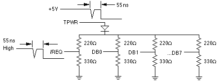
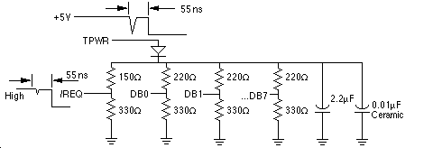
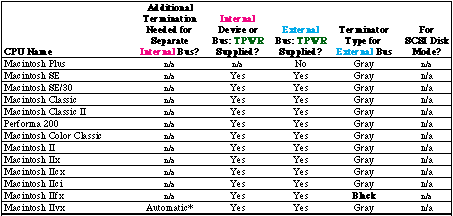
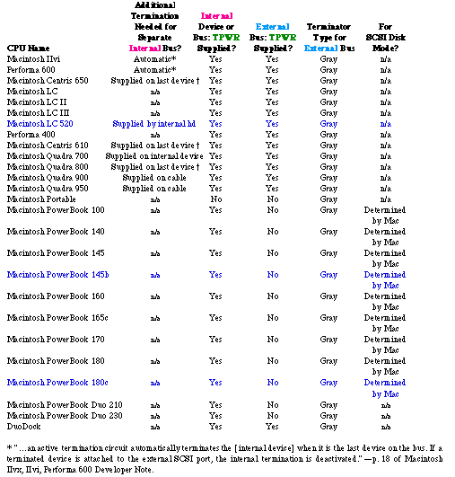
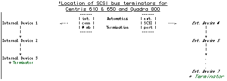
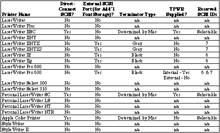

|
|
This Technical Note discusses SCSI termination on the Macintosh, including the
new rules of termination that are necessary with the advent of the high-speed
Macintosh IIfx.
Updated: [May 01 1992]
|
Why Is the Terminator After Sarah Connor?
One of the features of the now obsolete Macintosh IIfx was a new SCSI chip that
provides SCSI data transfer rates up to 3 megabytes per second, faster than any
Macintosh model prior to the Macintosh Quadra. To achieve these transfer rates,
components on the Macintosh IIfx logic board were smaller and faster, requiring
different termination configurations from those of previous Macintosh models.
The Macintosh IIfx requires the use of a combination of the following three new
termination parts. Users need to use these parts instead of existing SCSI
termination parts to configure a Macintosh IIfx with SCSI devices. The
Macintosh Quadra does not require special termination as the Macintosh
IIfx does, but it does have some special rules of its own and these are
discussed in a later section.
Apple SCSI Cable Terminator II: The Apple SCSI Cable Terminator II is a
revised external terminator for the Macintosh IIfx. All finished goods
Macintosh IIfx systems ship with this terminator in the box. It is easily
recognized because of the black color. Under no circumstances should one use
more than a single Apple SCSI Cable Terminator II on an external SCSI
chain--doing so may damage the logic board.
Internal SCSI Termination Block: The Internal SCSI Termination Block
provides internal termination resistance for Macintosh IIfx systems without
internal hard drives. All finished goods systems shipping without internal hard
drives have the Internal SCSI Termination Block installed.
Internal SCSI Filter: The Internal SCSI Filter provides termination
capacitance for internal Macintosh IIfx hard drives that shipped prior to March
19, 1990. All finished goods systems shipping without internal hard drives have
the Internal SCSI Filter installed.
The new termination configurations are simple, and you can remember them with a
single rule: Macintosh IIfx systems with external SCSI chains require a
terminator at both ends of the SCSI chain. One is internal to the system, while
the second is external, located at the end of the chain.
The reason for the new terminator is that on the Macintosh IIfx and future
hardware, the SCSI controller chip is a 2 micron part, which makes it very
fast. One of the results of this speed is that the chip now thinks that
glitches in the /REQ line are real signals. This problem is not likely to occur
on all of the Macintosh IIfx machines, but if you have a problem with your hard
drive not getting mounted on the new machine, you should try a new terminator
first. The symptom is more likely to show up on machines with several (three or
more) external SCSI devices attached to the computer and long strands of SCSI
cables. Figure 1 illustrates the old-style terminator with the signal showing
the spike propagation.

Figure 1 - Old-Style Terminator (Gray)
Basically, if a majority of the data lines change state at once, there is a
sudden drain on the TPWR line, which is resistively coupled to all of the
lines, including the /REQ line. This sudden drain causes a spike in the line,
and this spike is propagated into the /REQ line and to the SCSI controller
chip. The newer SCSI controller chip in the Macintosh IIfx interprets this
spike as a /REQ signal and starts reading data from the data lines; however,
since the data lines need 55 ns to settle, the data that the controller chip
reads is junk.
All internal hard disk drives sold by Apple with the Macintosh IIfx and later
machines have the Internal SCSI Filter installed; however, most third-party
drives do not yet have this filter installed and must be modified by a
qualified service provider to work correctly with the Macintosh IIfx.
Back to top
How to Stop the Terminator
Since the problem is caused by a drop in the TPWR line, the fix is to smooth
out the line. One need only add a 2.2 uF capacitor and a 0.01 uF ceramic
capacitor as illustrated in Figure 2. These capacitors act like a battery and
provide a little extra current when it is needed. This extra current results in
a smoother signal, which the SCSI controller chip does not interpret as a /REQ signal.

Figure 2 - New-Style Terminator (Black)
This new type of filter is only for internal hard disk drives. The Macintosh
IIfx ships with a new and improved external terminator (black in color), so
hard drive manufacturers do not need to worry about external termination. Apple
also ships an internal filter with every Macintosh IIfx that handles the
capacitance problem. This internal terminator has two parts. The first is the
resistors for the terminator. This part should already be installed on all
internal hard disk drives, so it is used only for CPUs that do not have an
internal hard drive. The second part of the internal terminator is the
capacitor filter. This filter should be installed on the hard disk drive end of
the SCSI internal cable. If your hard drive implements the new capacitors, you
can, and should, install the capacitor filter--you cannot have too much capacitance.
Back to top
External Termination
If you manufacture an external SCSI device, do not include termination
in it. The only terminator that should be outside a Macintosh IIfx is Apple's
external terminator, and it should be at the end of the SCSI chain. If you make
a SCSI terminator, it is most likely incompatible and may cause damage to the
hardware or the data. If your SCSI device cannot connect with Apple's
terminator, then you should provide an adapter that allows your SCSI device to
attach to the provided terminator.
Note: A notice in the Macintosh IIfx finished goods box instructs
customers to return self-terminating SCSI devices to the service provider to
disable termination.
Back to top
You're Terminated
Not every Macintosh IIfx owner is likely to experience this inconvenience, but
a few will. If your customers report problems that appear to be termination
related, then the first possible solution is to fix the terminator (for
external devices) or implement the filter (for internal devices). If you
manufacture an external SCSI device that is self-terminating, you should remove
it. This incompatibility will continue with future hardware products and could
even surface on the Macintosh IIci.
Back to top
Macintosh Quadra Termination
Proper SCSI termination is critical for correct operation of the Macintosh
Quadra computers, just as with all Macintosh computers. The Macintosh Quadra
computers require external SCSI termination at the end of the device chain,
either supplied by the last device in the chain, or using a standard Apple SCSI
Cable Terminator (M0332LL/A). Note that this is the standard SCSI terminator,
notthe black terminator required by the Macintosh IIfx (although
the black IIfx terminator may be used as well).
Termination is generally supplied at the factory for use with internal SCSI
devices. Some early floppy-only Macintosh Quadra 700 units may not have
internal termination, so users who attach external SCSI devices (without having
added an internal SCSI device) may need to double terminate their external SCSI
chain. Properly terminated floppy-only Macintosh Quadra 700 units will have a
terminator inserted into the motherboard internal SCSI cable connector. Users
of internal SCSI devices must, of course, remove this terminator before
connecting their internal SCSI device.
The Macintosh Quadra 900 is the first Macintosh computer to provide a separate,
internal SCSI bus. This bus is physically isolated from the external SCSI bus
and must also be properly terminated. The cable provided with the machine
includes all the termination necessary, so allinternal devices
must have SCSI termination removed before connecting to the internal Macintosh
Quadra 900 SCSI cable. If extra termination is supplied it may cause
intermittent hardware failures as well as physical damage to the device.
Developers who ship terminated SCSI devices for possible internal use in the
Macintosh Quadra 900 must provide users with instructions for removing the termination.
Back to top
PowerBook Termination
There are two important points that one must be aware of when it comes to
termination on the Macintosh PowerBook computers. The first point is that
termination on the PowerBook computers is supplied by the internal hard drive.
PowerBook computers depend on the internal hard drive to supply termination so
that they are properly terminated when placed in SCSI disk mode. In SCSI disk
mode, the PowerBook is just another hard drive in the SCSI chain. This is
because all other subsystems have been shut down. Because the PowerBook is
internally terminated by the hard drive, it must always be at the end
of the SCSI chain. If you have two PowerBook computers and other devices on the chain,
one PowerBook must be the very last device in the SCSI chain (in SCSI disk mode) and the
second PowerBook must be at the beginning of the chain (Initiator). This also means that it
is not possible to have more than one PowerBook on a single SCSI bus in SCSI disk mode.
The second point to be aware of is that the PowerBook computers do not supply
termination power. They rely on external devices to provide termination power
on the bus. If there are other devices on the bus that provide termination
power, we recommend that the connection to the first device out of the
PowerBook be terminated. It is not required that you do this. This ensures that
the cable is as close to ideal as possible.
Because termination power is not supplied by the PowerBook computers, we also
advise that you do not have powered off devices on the bus. This is true not
only for the PowerBook computers but for all Macintosh products. It has been
found that having devices powered off and on the bus causes degradation to
performance and signals. A termination problem can cause incorrect data to be
passed during a SCSI transfer. Therefore, the rule is this: Do
not have powered off devices connected to the bus. Also, do not
power on a device connected to the bus after booting, and never connect one
while the system is on.
If you still have troubles with the PowerBook after following the termination
rules, be sure to check that you have proper cables and that the other devices
on the bus also follow termination rules. Some devices are not
following the description of how Apple's devices work, and following the
guidelines of the Apple cable guide does not apply with non-Apple devices. If
you have non-Apple cables, be sure that they meet Apple SCSI specifications. It
is possible that other devices on the bus and improper cabling are what is
causing trouble for you.
Back to top
PowerBook Duo Termination
Unlike the other Macintosh PowerBook computers, the PowerBook Duo models do not
rely on an external device to provide termination power. Both the Deskbar and
the DuoDock provide termination power to the bus. They are actively terminated,
which means that they provide termination power and have the best architecture
for termination of any other device on the bus.
Back to top
Termination Outlined for Each Macintosh
Below is a table that outlines the termination specifics of all Macintosh
models (current as of this writing). It also describes whether termination
power (TPWR) is supplied for either the internal or external SCSI bus,
depending on which is present (one or both). The column on the far right
describes which terminator is required when the CPU (currently PowerBook
computers only) are in SCSI disk mode and functioning as an external storage
device on the external SCSI chain of a Macintosh. Below the table is an ASCII
representation of the active termination concept, which is new as of the
Macintosh IIv, Macintosh Centris, and Macintosh Quadra models.


* "...an active termination circuit automatically terminates the [internal
device] when it is the last device on the bus. If a terminated device is
attached to the external SCSI port, the internal termination is deactivated."--p. 18
of Macintosh IIvx, IIvi, Performa 600 Developer Note.

"The Macintosh Centris 610, Macintosh Centris 650, and Macintosh
Quadra 800 computers include a new feature that automatically provides the
proper termination when no external device is connected. . . . When one or more
devices are connected, the circuitry detects the external termination during
system reset and disconnects the termination on the logic board."--p. 19 of
Macintosh Centris 610, Macintosh Centris 650, and Macintosh Quadra 800
Computers Developer Note.
Termination on Apple Printers
The Apple LaserWriter IIf and IIg and Apple LaserWriter Pro 630 printers
require the same terminator as the IIfx--Apple SCSI Terminator II
(M5871G/A)--when connecting up to seven external SCSI storage devices (which
are for storing downloadable fonts, not for connecting the
printer to a Macintosh).
The LaserWriter Pro 630 is the first Apple LaserWriter that can also take a
single internal SCSI hard drive (for font storage) in addition to six (for a
total of seven) external hard drives. Any internal drive must not
be terminated internally since permanent termination is supplied on the
motherboard. This termination cannot be removed. The internal hard drive's SCSI
ID is hardwired to the motherboard; it is ID 6. Since this drive also counts as
one of the seven total devices allowed on the bus, any external device must not
have SCSI ID 6 when the internal drive is present. If no internal hard drive is
present, SCSI ID 6 is still reserved--external SCSI devices may not use ID 6
even if no internal hard drive is present. The end of the external SCSI chain
must also be terminated, whether an internal drive is present or not.
The LaserWriter Pro 630 does supply termination power (TPWR) to the internal
device but not to external devices. The LaserWriter IINTX, IIf,
and IIg printers do not supply TPWR.
The Apple LaserWriters IINTX and IINTXJ require the standard, gray Apple
terminator (M0332LL/A) when connecting external storage devices.
The Apple Personal LaserWriter SC and IISC printers as well as the Apple Color
Printer are SCSI devices themselves; that is, rather than being networkable
printers, they connect directly to the SCSI bus of the Macintosh. These
printers require the standard, gray Apple terminator, unless you're using them
with a Macintosh IIfx, in which case you should use the black terminator. In
other words, for the SCSI printers (only), the termination requirements are
dictated by the Macintosh since the printer functions as just another SCSI
device on the Macintosh computer's SCSI bus.
Below is a chart that will help you determine the termination characteristics
of all of Apple's printers. Printers with no SCSI implementation are
included just for the sake of completeness, so those characteristics that do
not apply will list n/a, for "not applicable," under the appropriate heading(s).

Back to top
References
Macintosh Technical Note "Fear No SCSI"
Back to top
Change History
|
01-April-1990
|
Originally written.
|
|
01-May-1992
|
Added a discussion of Macintosh PowerBook and
PowerBook Duo termination and termination for Apple printers.
|
Back to top
Downloadables
|

|
Acrobat version of this Note (536K)
|
Download
|
Back to top
|